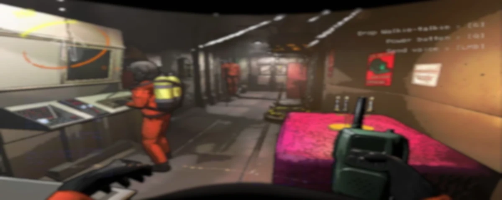
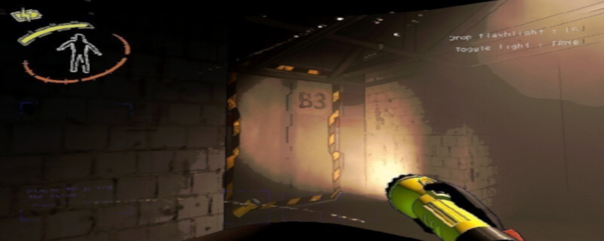

Guia Completo de Lethal Company
Lethal Company é um jogo cooperativo de terror e sobrevivência que mistura exploração, estratégia e trabalho em equipe. Nele, os jogadores assumem o papel de funcionários de uma corporação obscura, enviados a diferentes instalações abandonadas e planetas hostis para coletar sucata e recursos valiosos. O objetivo é simples na teoria: reunir o máximo de materiais possível e cumprir as metas de lucro impostas pela empresa. Na prática, porém, cada expedição é uma luta constante contra ambientes perigosos, criaturas letais e a pressão do tempo.
A experiência de jogo
O charme de Lethal Company está em sua atmosfera tensa e imprevisível. Cada mapa é gerado com diferentes layouts, oferecendo desafios únicos a cada partida. A comunicação entre os membros da equipe é essencial: enquanto alguns exploram corredores escuros e salas cheias de armadilhas, outros podem monitorar câmeras, dar instruções ou planejar rotas de fuga. O jogo recompensa a cooperação e pune a imprudência — uma decisão errada pode custar a vida de toda a tripulação.

Itens utilizaveis
Os equipamentos são ferramentas fundamentais para a sobrevivência. Lanternas, rádios, sensores e até armas improvisadas podem fazer a diferença entre voltar com sucata valiosa ou nunca mais sair da instalação. Saber escolher o que levar e como usar cada item é parte da estratégia que define o sucesso da missão. No guia, você encontrará descrições detalhadas de cada equipamento, suas funções e dicas práticas de utilização.
Criaturas
As criaturas que habitam os locais visitados pela corporação são variadas e aterrorizantes. Algumas caçam silenciosamente, outras atacam em grupos, e há aquelas que parecem brincar com o medo dos jogadores antes de atacar. Conhecer o comportamento de cada inimigo é vital para sobreviver. O bestiário do guia reúne informações sobre suas características, pontos fracos e estratégias de enfrentamento, ajudando a tripulação a se preparar para qualquer encontro.

Scraps
Os scraps são o coração da jogabilidade: pedaços de sucata, equipamentos quebrados e artefatos misteriosos que precisam ser coletados e vendidos para cumprir as metas da empresa. Nem todos os scraps têm o mesmo valor, e alguns podem ser mais arriscados de obter do que realmente valem. O guia traz uma lista completa dos scraps disponíveis, seus valores e dicas para otimizar a coleta sem colocar a equipe em risco desnecessário.
Por que jogar Lethal Company?
Mais do que um simples jogo de terror, Lethal Company é uma experiência social intensa. Ele combina a adrenalina de enfrentar monstros desconhecidos com a necessidade de confiar nos colegas de equipe. Cada partida é uma história diferente, cheia de momentos de tensão, risadas nervosas e decisões críticas. É um jogo que desafia não apenas a habilidade individual, mas também a capacidade de trabalhar em conjunto sob pressão.